Onomichi, Hiroshima: things to do, food and stays
Onomichi · Hiroshima
Onomichi
Highlighted on the Hiroshima map.
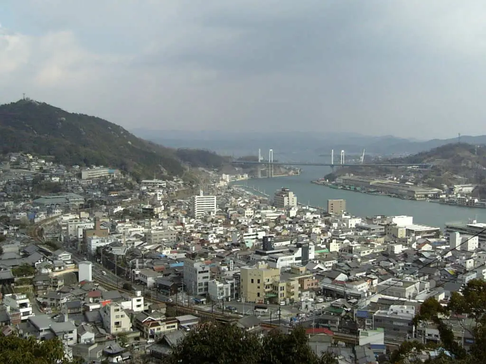
Stay
Azumi Setoda
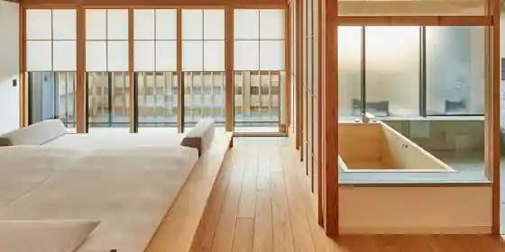
Azumi Setoda
Ryokan尾道西山
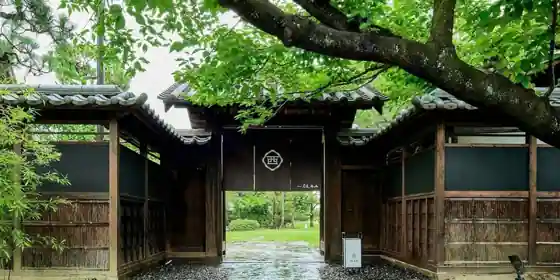
Ryokan Onomichi Nishiyama
尾道国際ホテル
Onomichi Kokusai Hotel
Hotel in Nihama, Onomichi with scenic views.
yubune
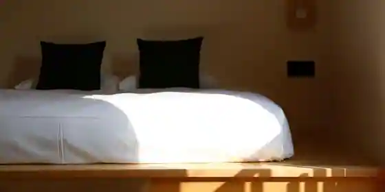
yubune
LOG
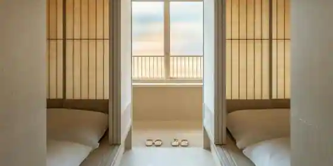
LOG
HOTEL CYCLE（ONOMICHI U2）
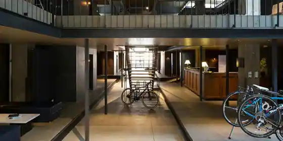
HOTEL CYCLE(ONOMICHI U2)
島居邸 洋館(せとうち 湊のやど)
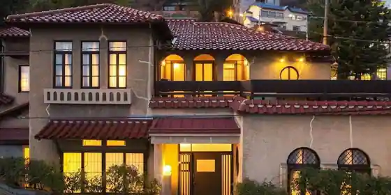
Shima Kyotei Yokan (Setochi Minato Noyado)
尾道千光寺坂の離菴ふう
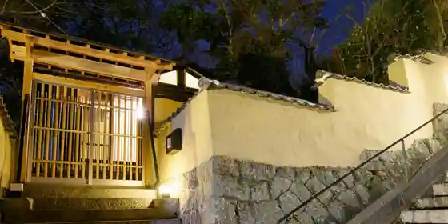
Onomichi Senkoji Saka No Ri Iori Fu
Inn in Tododo, Onomichi with a renovated traditional house.
グリーンヒルホテル尾道
Gurinhiru Hotel Onomichi
おのみち 帆聲-Hansei-
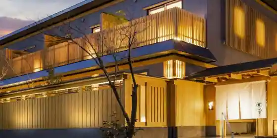
Onomichi Ho Koe -Hansei
Inn in Kubo, Onomichi with breakfast available.
尾道倶楽部
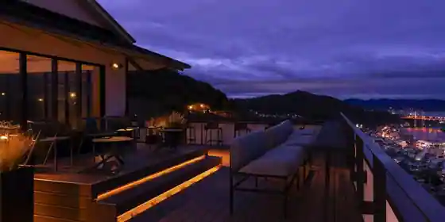
Onomichi Kurabu
HOTEL BEACON ONOMICHI
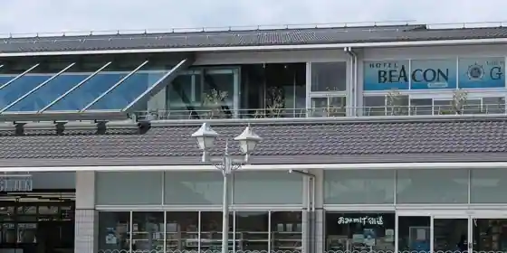
HOTEL BEACON ONOMICHI
Dining
からさわ
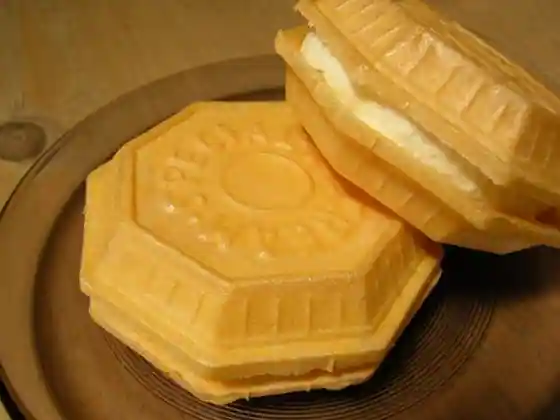
Karasawa
お好み焼 村上
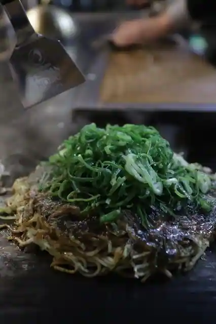
O Konomi Yaki Murakami
パン屋航路
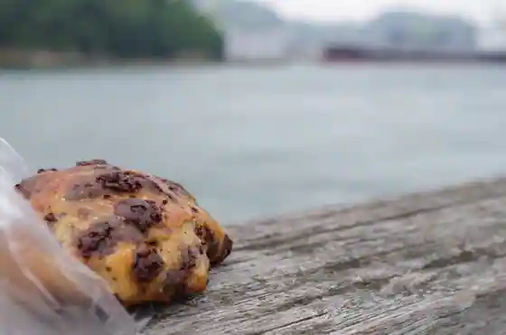
Bakery Ya Koro
串かつ 一口
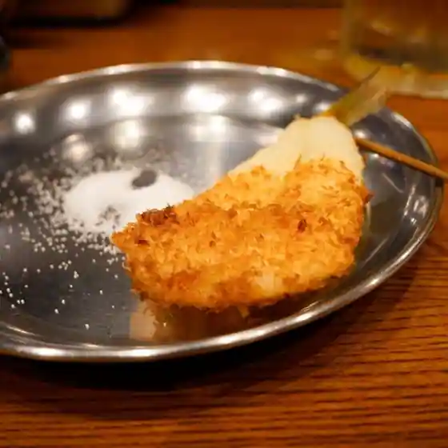
Kushi Katsu Hitokuchi
郷土味 かけはし
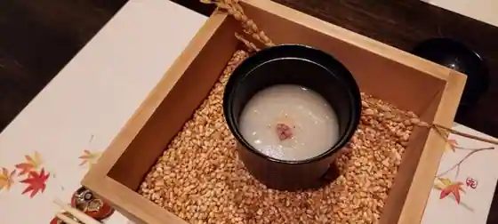
Kyodo Aji Kakehashi
おのみち帆聲
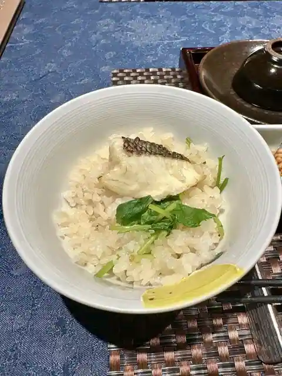
Onomichi Ho Koe
ドルチェ 瀬戸田本店
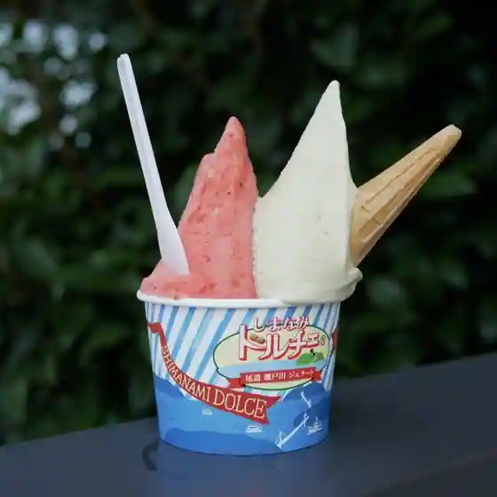
Doruche Setoda Hon
尾道ラーメン 丸ぼし
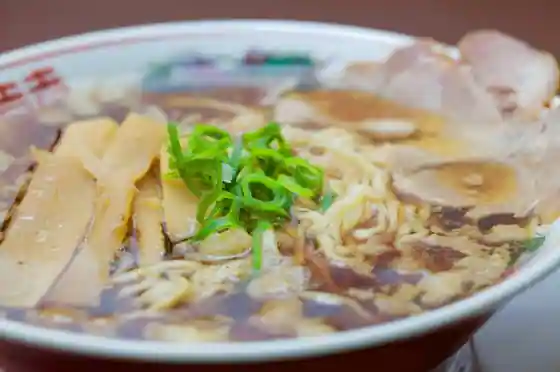
Onomichi Ramen Maru Boshi
おやつとやまねこ
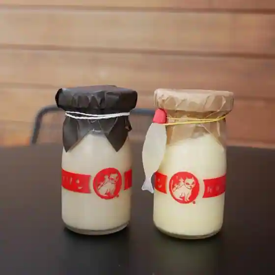
Oyatsutoyamaneko
鮨 やくしどう
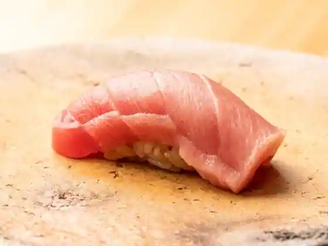
Sushi Yakushido
高原誠吉食堂
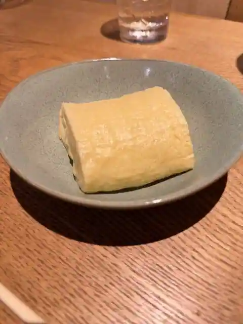
Kogen Seikichi Shokudo
Blanchemin
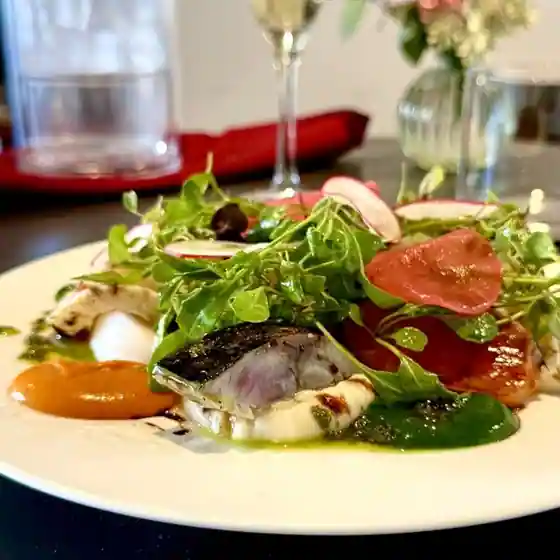
Blanchemin
壱番館
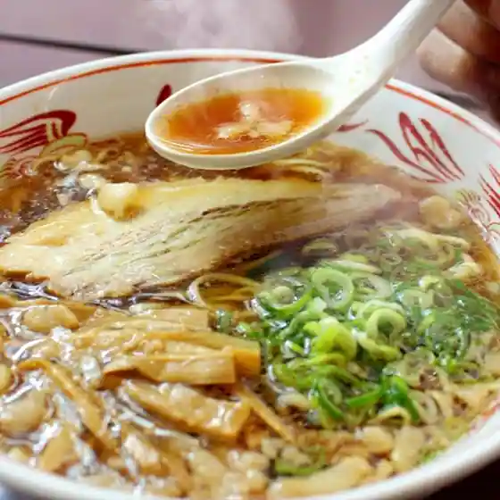
Ichiban Kan
笑空
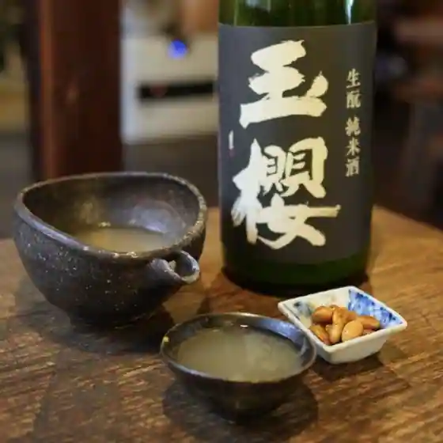
Warai Sora
はっさく屋
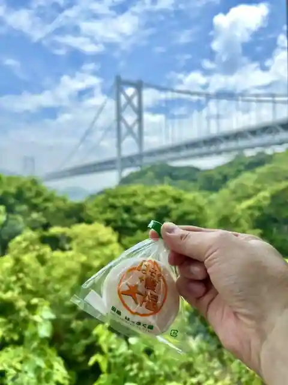
Hassaku Ya
竹村家本館
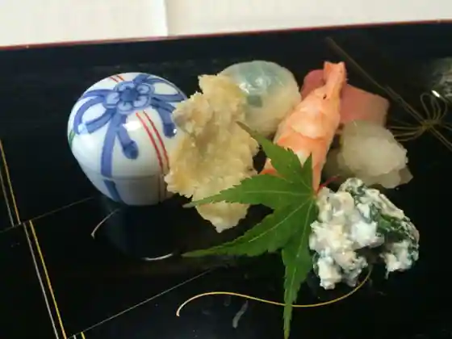
Takemura Kahon Kan
つたふじ
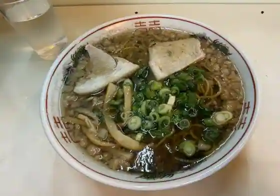
Tsutafuji
中華そば 朱
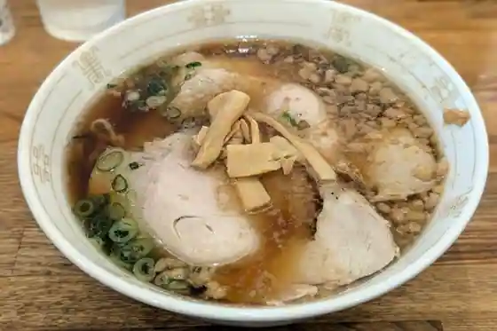
Chuka Soba Shu
ネコノテパン工場
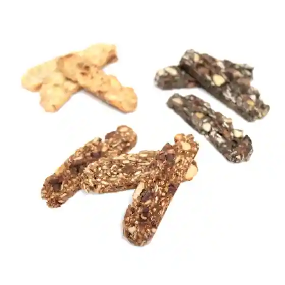
Nekonote Bakery Kojo
尾道ラーメン たに 尾道駅ビル店
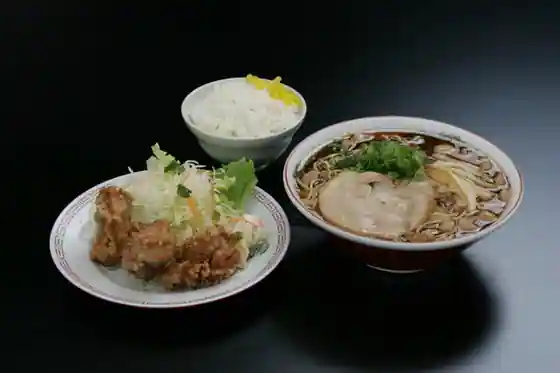
Onomichi Ramen Tani Onomichi Ekibiru
割烹 東山
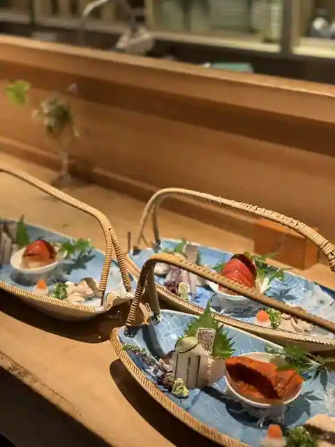
Kappo Higashiyama
東珍康
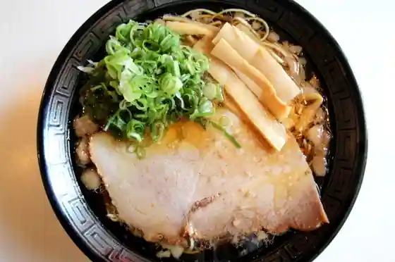
Higashi Chin Yasushi
茶房こもん
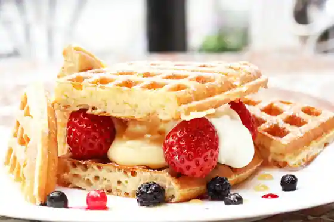
Sabo Komon
Sights
Senkoji
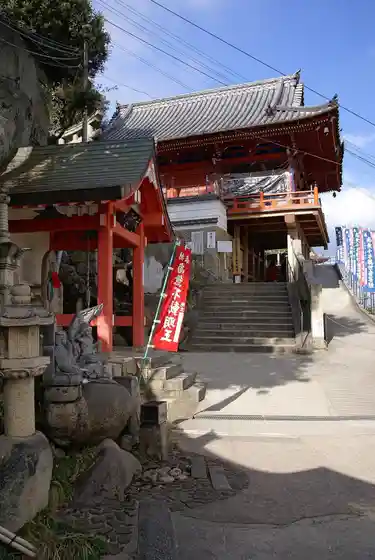
Onomichi Suido
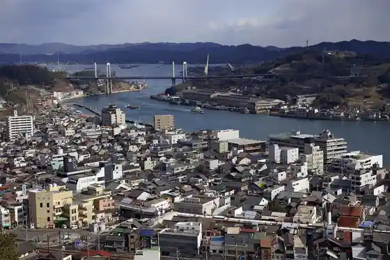
Jodo Tera
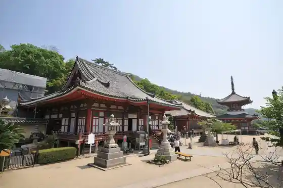
Onomichi Eki
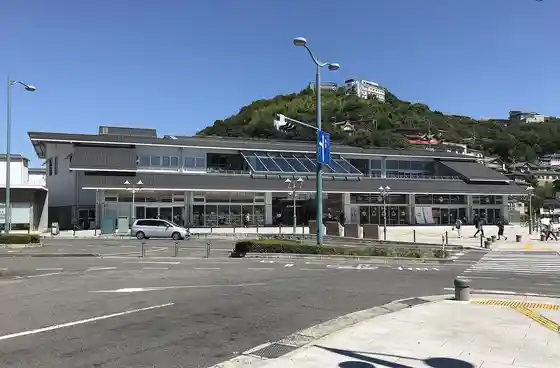
In Shima Bridge